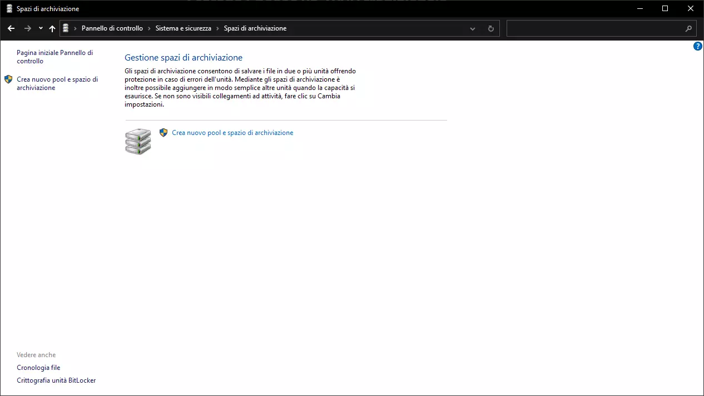
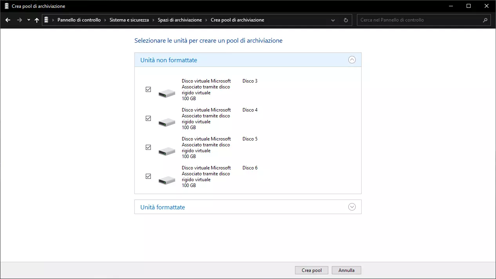
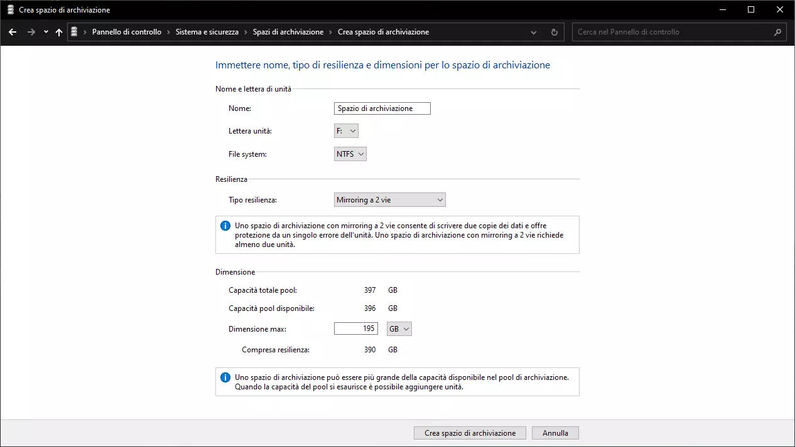
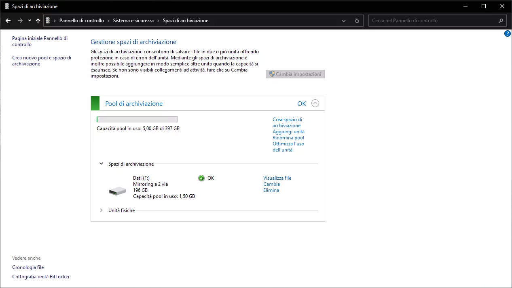

Storage Spaces kind of has its own category in the world of RAID solutions. Being first introduced in Windows 8 and Windows Server 2012, it allows Windows users to group multiple physical disks (e.g. HDDs, SDDs, or even USB flash drives) in a single storage pool the capacity of which is broken up into multiple logical disks (the “Storage Spaces”), each one with varying level of resilience (none, mirroring, parity).
Features overview
Along many things, Storage Spaces can:
- Work across different types of disks and disk interfaces
- Work with disks of different sizes
- Easily shrink or expand Spaces (thin provisioning)
- Make use of SSD drives as cache
- Be configured as a tiered storage solution
- Checksum data (with the aid of the ReFS file system)
Storage Spaces vs. Traditional RAID
Storage Spaces is often viewed as a software RAID solution and, despite the “RAID” word (Redundant Array of Inexpensive Disks) alone being appropriate in this context, it still can’t be applied to Storage Spaces, as “traditional” RAID topologies are a industry-standard way to group disks at a block level, while Storage Spaces is a broader scoped, Windows-specific software (akin to ZFS in Unix-like systems)
How to setup a Storage Space
A Storage Space can be setup in two ways, from Control Panel or from PowerShell
Control Panel
Go to Control Panel > System and Security > Storage Spaces

Select “Create a new pool and storage space”

Select the disks you want to add to the pool. Make sure each disk is blank

If you want to add a Storage Space to your pool, you can do so now; Here’s a small breakdown of the options:
- Name: The name assigned to the Space (e.g. Data)
- Drive Letter: The letter assigned to the Space (e.g. D:, E:, F:)
- File system: The file system of the Storage Space. Can be either NTFS or ReFS (only on some editions of Windows)
- Resiliency type: The level of resilience of the Storage Space; These levels are:
- Simple: No resiliency, requires at last a physical disk
- Two-way Mirror: Keeps two copies of every file, requires at least two physical disks
- Three-way Mirror: Keeps three copies of every file, requires at least five physical disks
- Parity: Stores parity data in each disk to rebuild the data in the event of hardware failure, requires at least three physical disks
- Size: The maximum size of the Storage Space. You can input any capacity you want, Storage Spaces will prompt you to add more disks when needed
(Although they may seem like the better option, parity spaces have pretty bad performance; They’re better suited as a form of archive)

At the end of this procedure you’ll have created a brand new Storage Space, ready to store all your data.
PowerShell
Select the available disks with:
$PhysicalDisks = (Get-PhysicalDisk -CanPool $True)
Please note: The command above selects all disks that can be grouped into a Storage Pool; To make sure that only the disk you want to add to the pool are selected, check the output of:
$PhysicalDisks
To create a new pool type:
New-StoragePool -FriendlyName pool_name -StorageSubsystemFriendlyName "Windows Storage*" -PhysicalDisks $PhysicalDisks
Now, to create a new Storage Space (in this example with mirroring), type:
New-VirtualDisk -StoragePoolFriendlyName pool_name -FriendlyName space_name -ResiliencySettingName Mirror -UseMaximumSize
Lastly, to format the Storage Space (in this example with NTFS), type:
Get-VirtualDisk -FriendlyName space_name | Get-Disk | Initialize-Disk -Passthru | New-Partition -AssignDriveLetter -UseMaximumSize | Format-Volume -FileSystem ntfs